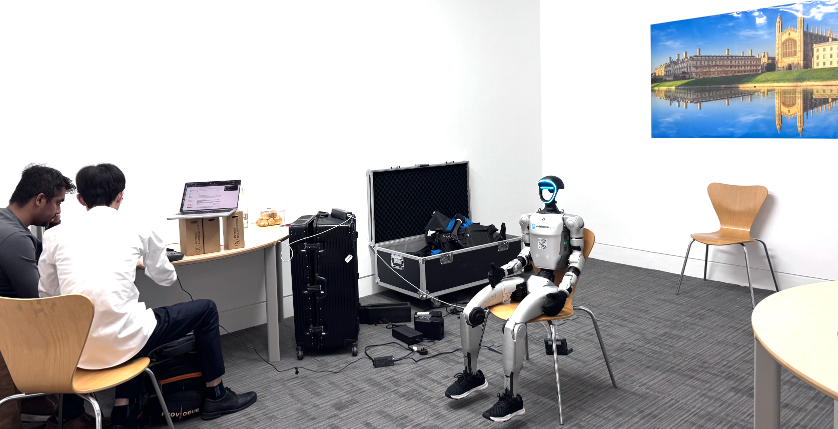

Collaborations with Computer Architecture teams at Cambridge
We are collaborating with CASCADE, the Computer Architecture and Semiconductor Design Centre at the University of Cambridge, which sits at the intersection of robotics and computer architecture.
Photo: https://www.cst.cam.ac.uk/news/amd-supports-cascade-centre-advance-phd-research-computer-architecture-and-semiconductor-design
PIP: An Ensemble of Programming-Idiom Predictors
M Karl, A W Chadwick, M Erdos, J Nie, R Antonova, T Jones, R Mullins. 6th Championship Branch Prediction
Combating the Memory Walls: Optimization Pathways for Long-Context Agentic LLM Inference
H Wu, C Xiao, J Nie, X Guo, B Lou, J T H Wong, Z Mo, C Zhang, P Forys, W Luk, H Fan, J Cheng, T M Jones, R Antonova, R Mullins, A Zhao. Preprint
Collaborations with Autodiscovery
We are collaborating with Autodiscovery on applications in humanoid robotics, teleoperation and whole-body control. Autodiscovery is a startup that supplies customizable robotics solutions in the UK.
Check out a few demos of projects we collaborated on!
Collaborations with Stanford University
Causal-PIK: Causality-based Physical Reasoning with a Physics-Informed Kernel
C Morlans, M Yi, C Chen, S Wu, R Antonova, T Gerstenberg, J Bohg. International Conference on Machine Learning (ICML), 2025

Mobi-pi: Mobilizing Your Robot Learning Policy
J Yang, I Huang, B Vu, M Bajracharya, R Antonova, J Bohg. Conference on Robot Learning (CoRL), 2025
CUPID: Curating Data your Robot Loves with Influence Functions
C Agia, R Sinha, J Yang, R Antonova, M Pavone, H Nishimura, M Itkina, J Bohg. Conference on Robot Learning (CoRL), 2025
EquiBot: SIM(3)-Equivariant Diffusion Policy for Generalizable and Data Efficient Learning
J Yang, Z Cao, C Deng, R Antonova, S Song, J Bohg. Conference on Robot Learning (CoRL), 2024
Unpacking Failure Modes of Generative Policies: Runtime Monitoring of Consistency and Progress
C Agia, R Sinha, J Yang, Z Cao, R Antonova, M Pavone, J Bohg. Conference on Robot Learning (CoRL), 2024
EquivAct: SIM(3)-Equivariant Visuomotor Policies beyond Rigid Object Manipulation
J Yang, C Deng, J Wu, R Antonova, L Guibas, J Bohg. IEEE International Conference on Robotics and Automation (ICRA), 2024
Learning Tool Morphology for Contact-Rich Manipulation Tasks with Differentiable Simulation
M Li, R Antonova, D Sadigh, J Bohg. IEEE International Conference on Robotics and Automation (ICRA), 2023

TidyBot: Personalized Robot Assistance with Large Language Models
J Wu, R Antonova, A Kan, M Lepert, A Zeng, S Song, J Bohg, S Rusinkiewicz, T Funkhouser. IEEE International Conference on Intelligent Robots and Systems (IROS), 2023. Journal version published in Autonomous Robots, 2023.
In-Hand Manipulation of Unknown Objects with Tactile Sensing for Insertion
C Pan, M Lepert, S Yuan, R Antonova, J Bohg. IEEE International Conference on Intelligent Robots and Systems (IROS), 2023
Rethinking Optimization with Differentiable Simulation from a Global Perspective
R Antonova*, J Yang*, K Jatavallabhula, J Bohg. Conference on Robot Learning (CoRL), 2022
A Bayesian Treatment of Real-to-Sim for Deformable Object Manipulation
R. Antonova, J. Yang, P. Sundaresan, D. Fox, F. Ramos, J. Bohg. IEEE Robotics and Automation Letters (RA-L), 2022
DiffCloud: Real-to-Sim from Point Clouds with Differentiable Simulation and Rendering of Deformable Objects
P Sundaresan, R Antonova, J Bohg. IEEE International Conference on Intelligent Robots and Systems (IROS), 2022

Learning Periodic Tasks from Human Demonstrations
J Yang, J Zhang, C Settle, A Rai, R Antonova, J Bohg. IEEE International Conference on Robotics and Automation (ICRA), 2022